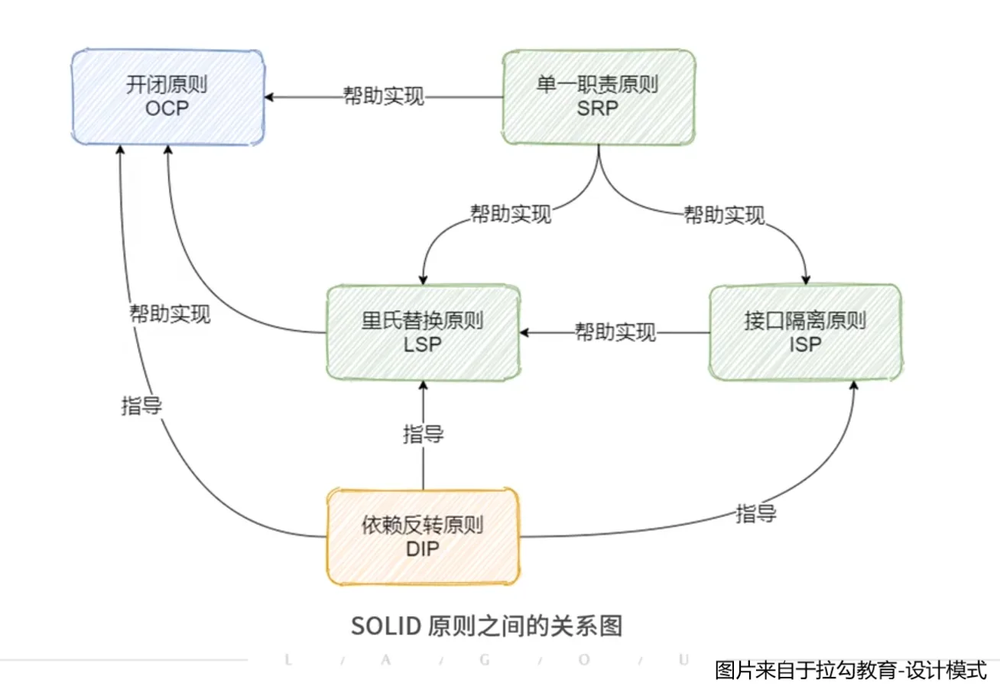

设计模式：23 种套路与六原则

- 1设计模式：23 种套路与六原则本文
- 2工厂方法模式：由子类决定创建什么
- 3抽象工厂模式：成系列地创建对象
- 4生成器模式：分步骤造出复杂对象
- 5原型模式：复制而不是新建
- 6单例模式：全局只此一份
- 7适配器模式：让不兼容的接口对接
- 8桥接模式：把抽象与实现拆开
- 9组合模式：把对象搭成一棵树
- 10装饰模式：给对象层层加功能
- 11外观模式：给复杂系统一个入口
- 12享元模式：用共享状态省内存
- 13代理模式：给对象配个替身
- 14责任链模式：让请求沿链传递
- 15命令模式：把请求封装成对象
- 16迭代器模式：不暴露内部地遍历
- 17中介者模式：让对象不再彼此纠缠
- 18备忘录模式：随时存档与回滚
- 19观察者模式：一变全知道
- 20状态模式：状态变了行为就变
- 21策略模式：算法可替换
- 22模板方法模式：父类定框架，子类填步骤
- 23访问者模式：把操作从结构里拿出来
- 24解释器模式：给语言定义一套语法
简介#
上个世纪 90 年代，Eric Gamma、Richard Helm、Ralph Johnson、John Vlissides 等 4 人合作出版了《设计模式：可复用面向对象软件的基础》。而"设计模式"这个概念也是从中而来。这 4 人也被称为 the Gang of Four，简称 GoF。
"设计模式"共 23 种，是一种能够提高代码可复用性、可维护性、可读性、稳健性以及安全性的解决方案。它是解决某些特定问题的一般性概念，能够根据需求进行调整，用于解决代码中反复出现的设计问题。
合理利用"设计模式"开发会给我们带来很多的便利。而如何合理的运用就在于学会"找到变化，封装变化"。
设计原则#
本系列将通过 Java（面向对象编程语言）和 UML（统一建模语言）来表示各种设计模式。
需要了解的内容有：
基本开发原则#
-
单一原则（Dont't Repeat Yourself）抽象出一个共同的解决方法来避免冗余重复的代码。 不过在使用单一原则时应该避免过度关心代码重用和设计。
-
简单原则（Keep It Simple and Stupid）指代码应该容易理解、编写和改变。 简单代码应该是让别人理解代码逻辑时更简单，迭代时更轻松。将来可能需要，但现在却用不上的代码不要写。
-
迪米特法则（Law of Demeter）又称"最少原则"指出一个类应该与它直接相关的类通信和每一个类应该知道自己需要的最少知识。 或者说一个类应该了解的只有与它有直接关联的类，包括依赖、关联、聚合、组合等。在简化局部代码时应该注意整体，避免引入很多过小的中间类和方法。适用"迪米特法则"可以降低代码耦合度。
-
表达原则（Program Intently and Expressively）指编程时应该有清晰的编程意图并通过代码明确地表达出来。 好的命名规范对于他人理解代码有着很多的帮助。好的注释应该是"为什么"注释。
-
面向对象原则（SOLID）包括单一职责原则（Single Responsibility Principle）、开闭原则（Open Closed Principle）、里氏替换原则（Liskov Substitution Principle）、接口隔离原则（Interface Segregation Principle）、依赖倒置原则（Dependence Inversion Principle）。 其中开闭原则也被称为"面向对象设计中最重要的原理"。

SOLID 原则 -
惯例优于配置原则（Convention over Configuration）是将一些在编程中公认的配置方式和约定信息作为内部缺省的默认规则来使用。 惯例原则通过提供隐形的公共知识，来减少开发人员重复决策的次数。
-
关注点分离原则（Separation of Concerns）是将计算机程序分隔为不同部分的设计原则。 先将复杂问题做合理的分解，再分别仔细研究程序上特定问题的侧面（关注点），最后解决得出的接口，再合成整体的解决思路。
-
契约式设计原则（Design by Contract）指在软件设计时应该为软件组件定义一种精确和可验证的接口规范。这种规范要包括使用的预置条件、后置条件和不变条件，用来扩展普通抽象数据类型的定义。 如何做好 API 接口设计有 6 点：
- 让接口职责分离；
- API 命名很重要；
- 尽量少创造自定义错误码；
- 同一接口要做到幂等；
- 安全策略；
- 版本管理。
-
职责分离原则将不同变化原因引起的类或方法修改行为拆分到不同类或方法里去。 或者说将模块看成一个大的对象，按面向对象设计去拆分职责。
六大设计原则#
- 迪米特法则（Law of Demeter）又称"最少原则"指出一个类应该与它直接相关的类通信和每一个类应该知道自己需要的最少知识。 或者说一个类应该了解的只有与它有直接关联的类，包括依赖、关联、聚合、组合等。在简化局部代码时应该注意整体，避免引入很多过小的中间类和方法。
- 单一职责原则（Single Responsibility Principle）指对象应该仅具有一种单一的功能。 或者说当一个类存在一个甚至多个因素使它发生改变时，就应该拆分它。例如：实体类仅仅包含数据、设置数据和包含数据。如果一个实体类包含其他服务，那么在其他服务所依赖的外部接口变更时，就需要修改类，违背了单一职责原则。
- 开闭原则（Open Closed Principle）指程序对于扩展开放，对于修改封闭。 开闭原则往往运用于框架设计，而对于变更频繁的业务来说，有时会显得过分冗余。
- 里氏替换原则（Liskov Substitution Principle）指子类应该能够完全替换掉它的基类。 或者说应该尽量保持子类和父类方法行为的一致性，子类只完成父类期待的事情。例如：父类希望子类去实现相应的数据格式验证，否则就抛出输入异常。但是子类却在实现时添加了数据库的数据校验，还增加了数据库数据验证异常，这就违背了里氏替换原则。
- 接口隔离原则（Interface Segregation Principle）指多个特定客户端接口要好于一个宽泛用途的接口。 或者说不能强迫类使用它们不想使用的方法。例如：在一个增删改查的接口中加入同步的方法，并非所有持久层类都需要使用到同步方法，这就违背了接口隔离原则。
- 依赖倒置原则（Dependence Inversion Principle）认为一个方法应该遵从"依赖于抽象而不是一个实例"。 依赖倒置原则是一种统一代码交互标准的软件设计方法，具体表现在：
- 高层模块不应该依赖底层模块，二者都应该依赖于抽象。 例如有一个高层模块需要依赖底层模块时，我们不应该只把高层模块抽象为接口，这样一旦底层模块发生改变时，高层模块依然要修改。我们应该把它们间的依赖关系抽象出来，让高层抽象模块依赖底层抽象模块，在让高层模块和底层模块分别实现它们。以后即使底层模块发生改变，我们也不需要修改高层模块，因为它们间的依赖关系没有变化。
- 抽象不应该依赖于细节，细节应该依赖于抽象。
- 好的抽象是具备一些共性规律并能经得起实践检验的抽象。
设计模式分类#
设计模式共 23 种，分别为创建型模式 5 种、结构型模式 7 种、行为型模式 11 种。
- 创建型模式提供创建对象的机制， 增加已有代码的灵活性和可复用性。
- 结构型模式介绍如何将对象和类组装成较大的结构， 并同时保持结构的灵活和高效。
- 行为模式负责对象间的高效沟通和职责委派。
创建型模式#
创建型模式共 5 种，分别为工厂方法 Factory Method、抽象工厂 Abstract Factory、生成器 Builder、原型 Prototype、单例 Singleton。
💡工厂方法模式（Factory Method） 实现了对象创建时的多态。
💡抽象工厂模式（Abstract Factory） 本质上是为了寻找正确的抽象产品。
💡生成器模式（Builder） 实现了对象创建过程的多态。
💡原型模式（Prototype） 是一种将对象生成的责任代理给自己的模式。
💡单例模式（Singleton） 相当于强制实现了有限、唯一对象的生产。
工厂方法 Factory Method#
工厂方法模式是一种创建型设计模式，其在父类中提供一个创建对象的方法，允许子类决定实例化对象的类型。
更多内容请点击👉工厂方法 Factory Method
抽象工厂 Abstract Factory#
抽象工厂模式是一种创建型设计模式， 它能创建一系列相关的对象， 而无需指定其具体类。
更多内容请点击👉抽象工厂 Abstract Factory
生成器 Builder#
生成器模式也叫"建造者模式"是一种创建型设计模式， 使你能够分步骤创建复杂对象。 该模式允许你使用相同的创建代码生成不同类型和形式的对象。
更多内容请点击👉生成器 Builder
原型 Prototype#
原型模式是一种创建型设计模式，使你能够复制已有对象，而又无需使代码依赖它们所属的类。
更多内容请点击👉原型 Prototype
单例 Singleton#
单例模式是一种创建型设计模式， 让你能够保证一个类只有一个实例， 并提供一个访问该实例的全局节点。
更多内容请点击👉单例 Singleton
结构型模式#
结构型模式共 7 种，分别为适配器 Adapter、桥接 Bridge、组合 Composite、装饰 Decorator、外观 Facade、享元 Flyweight、代理 Proxy。
💡适配器模式 （Adapter） 实现了不同接口功能之间的转换，为组件的快速复用提供了直接的解决办法。
💡桥接模式（ Bridge） 实现了抽象实体和抽象行为之间的永久绑定，往往与抽象工厂模式共同用于跨平台设计的场景。
💡组合模式（ Composite） 用于表达整体和部分的关系，可忽略单个对象和合成对象之间的差别，实际采用的是树状结构。
💡装饰模式 （Decorator） 通过代理方式实现了接口功能的多态，避免了大量子类的派生。适用于链状和树状的结构，但容易造成对象与装饰器之间耦合度过高。
💡外观模式 （Facade） 用于对子系统提供统一的接口。
💡享元模式 （Flyweight） 用于解决大对象重复创建损耗资源的问题，通过共享对象池来复用对象。
💡代理模式 （Proxy） 模式的结构与装饰模式相似，但侧重点不同，一种是修改对象的行为，另一种是控制访问。
适配器 Adapter#
适配器模式是一种结构型设计模式，它能使接口不兼容的对象能够相互合作。
更多内容请点击👉适配器 Adapter
桥接 Bridge#
桥接模式是一种结构型设计模式，可将一个大类或一系列紧密相关的类拆分为抽象和实现两个独立的层次结构，从而能在开发时分别使用。
更多内容请点击👉桥接 Bridge
组合 Composite#
组合模式是一种结构型设计模式，你可以使用它将对象组合成树状结构，并且能像使用独立对象一样使用它们。
更多内容请点击👉组合 Composite
装饰 Decorator#
装饰模式是一种结构型设计模式，允许你通过将对象放入包含行为的特殊封装对象中来为原对象绑定新的行为。或者说允许动态地向一个现有的对象添加新的功能同时又不改变其结构，相当于对现有的对象进行了一个包装。所以装饰模式也称"包装器模式"。
更多内容请点击👉装饰 Decorator
外观 Facade#
外观模式是一种结构型设计模式，能为程序库、框架或其他复杂类提供一个简单的接口或为子系统中的一组接口提供统一的接口。它定义了一个更高级别的接口，使子系统更易于使用。
更多内容请点击👉外观 Facade
享元 Flyweight#
享元模式是一种结构型设计模式，它摒弃了在每个对象中保存所有数据的方式，通过共享多个对象所共有的相同状态，让你能在有限的内存容量中载入更多对象。
更多内容请点击👉享元 Flyweight
代理 Proxy#
代理模式是一种结构型设计模式，让你能够提供对象的替代品或其占位符。代理控制着对于原对象的访问，并允许在将请求提交给对象前后进行一些处理。
更多内容请点击👉代理 Proxy
行为型模式#
🔖 类行为型模型： 使用继承的方式来关联不同类之间的行为。
🔖 对象行为型模型： 使用组合或聚合方式来分配不同类之间的行为。
行为型模式共 11 种，分别为责任链 Chain of Responsibility、命令 Command、迭代器 Iterator、中介者 Mediator、备忘录 Memento、观察者 Observer、状态 State、策略 Strategy、模板方法 Template Method、访问者 Visitor、解释器 Interpreter。
💡责任链模式（Chain of Responsibility） 用于链条状结构，将处理请求沿链条进行传递，动态指定职责的承担对象，由各自对象实现对应职责。
💡命令模式（Command） 将某个命令（函数方法）封装成对象进行传递，关注的维度是命令。
💡迭代器模式（Iterator） 大量应用于基础类库中，对重复遍历操作进行封装。
💡中介者模式（Mediator） 解耦对象之间的直接引用，在结构上是星型结构，保证了对象行为上的稳定性。
💡备忘录模式（Memento） 也叫快照模式，通常用于捕获一个对象的内部状态。
💡观察者模式（Observer） 经典 MVC 模式的变形，在结构上是星型结构，侧重于将观察者和被观察者代码解耦。
💡状态模式（State） 最常用的实现方式是状态机，大量应用于需要控制状态流转的系统中。
💡策略模式（Strategy） 将多个不同的算法封装成策略，适合应用于对计算效率有一定要求的系统。
💡模板方法模式（Template Method） 定义一个算法模板，并将具体的执行步骤延迟到子类中实现。
💡访问者模式（Visitor） 在对象级别中实际为树型结构，与抽象工厂模式类似。
💡解释器模式（Interpreter） 为某个语言（编程语言也是语言）定义它的语法表示。
责任链 Chain of Responsibility#
责任链模式是一种行为设计模式，允许你将请求沿着处理者链进行发送。收到请求后，每个处理者均可对请求进行处理，或将其传递给链上的下个处理者。简单来说就是通过构建一个处理流水线来对一次请求进行多次的处理。
更多内容请点击👉责任链 Chain of Responsibility
命令 Command#
命令模式是一种行为设计模式，它可将请求转换为一个包含与请求相关的所有信息的独立对象。该转换让你能根据不同的请求将方法参数化、延迟请求执行或将其放入队列中，且能实现可撤销操作。
更多内容请点击👉命令 Command
迭代器 Iterator#
迭代器模式是一种行为设计模式，让你能在不暴露集合底层表现形式（列表、 栈和树等）的情况下遍历集合中所有的元素。
更多内容请点击👉迭代器 Iterator
中介者 Mediator#
中介者模式是一种行为设计模式，能让你减少对象之间混乱无序的依赖关系。该模式会限制对象之间的直接交互，迫使它们通过一个中介者对象进行合作。
更多内容请点击👉中介者 Mediator
备忘录 Memento#
备忘录模式（也称快照模式）是一种行为设计模式，允许在不暴露对象实现细节的情况下保存和恢复对象之前的状态。
更多内容请点击👉备忘录 Memento
观察者 Observer#
观察者模式（也称事件订阅者、监听者。）是一种行为设计模式，允许你定义一种订阅机制，可在对象事件发生时通知多个"观察"该对象的其他对象。这是对象之间的一对多依赖关系，这样当一个对象改变状态时，它的所有依赖项都会自动得到通知和更新。
更多内容请点击👉观察者 Observer
状态 State#
状态模式是一种行为设计模式，让你能在一个对象的内部状态变化时改变其行为，使其看上去就像改变了自身所属的类一样。或者说通过控制状态的变化使其行为发生变化。
更多内容请点击👉状态 State
策略 Strategy#
策略模式是一种行为设计模式，它能让你定义一系列算法，并将每种算法分别放入独立的类中，以使算法的对象能够相互替换。
更多内容请点击👉策略 Strategy
模板方法 Template Method#
模板方法模式是一种行为设计模式，它在超类中定义了一个算法的框架，允许子类在不修改结构的情况下重写算法的特定步骤。
更多内容请点击👉模板方法 Template Method
访问者 Visitor#
访问者模式是一种行为设计模式，它能将算法与其所作用的对象隔离开来。允许在运行时将一个或多个操作应用于一组对象，将操作与对象结构分离。
更多内容请点击👉访问者 Visitor
解释器 Interpreter#
解释器模式是一种行为设计模式，用于定义语言的语法规则表示，并提供解释器来处理句子中的语法。
更多内容请点击👉解释器 Interpreter
📌最后：希望本文能够给您提供帮助，文章中有不懂或不正确的地方，请在下方评论区💬留言！
🔗参考文献：
📖 图解设计模式 /（日）结城浩著；杨文轩译. --北京：人民邮电出版社，2017.1